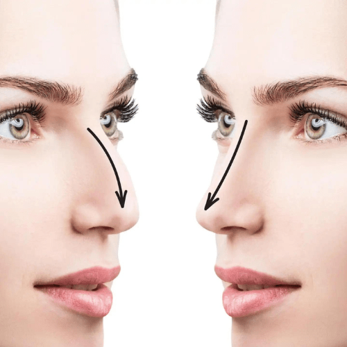
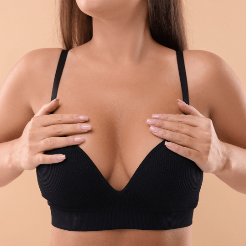
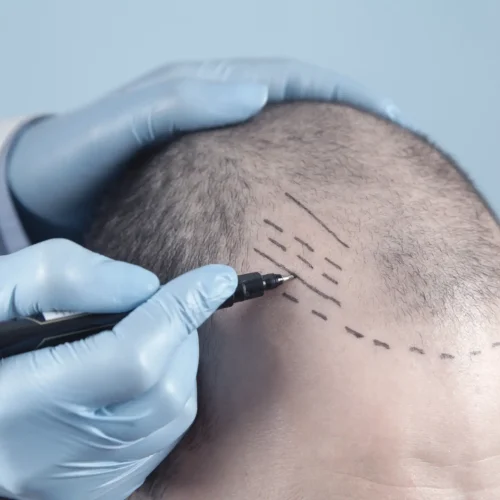
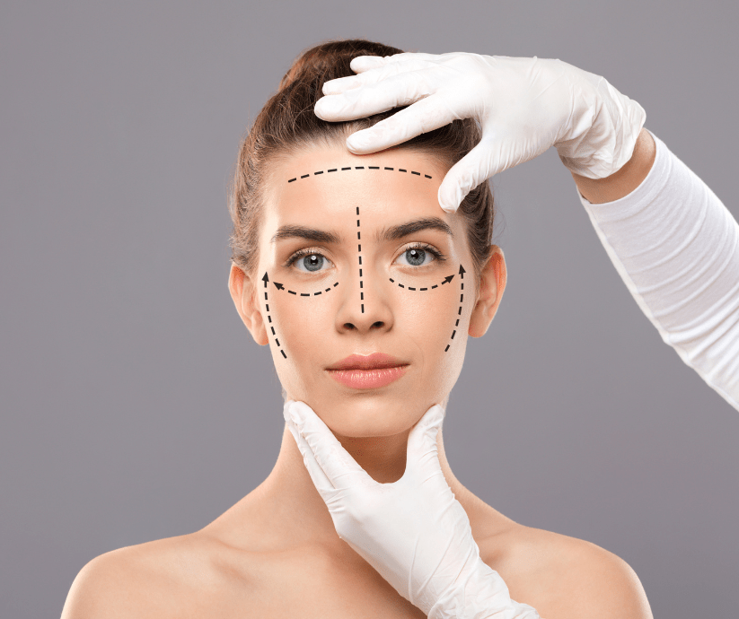
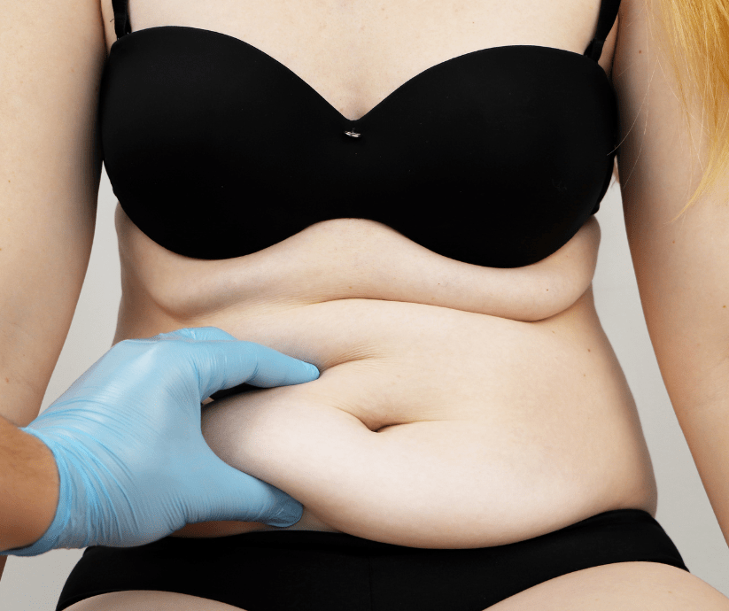

Cele mai căutate intervenții medicale în Turcia
Pachete ALL INCLUSIVE pentru intervențiile preferate de pacienții români — cu spitalizare, hotel, transferuri, translator și asistență completă.

Rinoplastie
Remodelarea nasului pentru un rezultat echilibrat și natural — rinoseptoplastie de la 2900€ all inclusive.
Vezi detalii →
Gastric Sleeve
Micșorarea stomacului pe cale laparoscopică — scădere durabilă în greutate, de la 1900€ all inclusive.
Vezi detalii →
Intervenții Mamare
Implant, lifting sau reducție mamară cu implanturi Mentor — de la 2200€ all inclusive.
Vezi detalii →
Transplant de păr
Tehnicile FUE Sapphire și DHI, fără cicatrici, cu rezultate permanente — de la 1750€ all inclusive.
Vezi detalii →
Lifting facial și gât
Un aspect mai ferm și mai tineresc, cu rezultate ce durează 7-10 ani — de la 3200€ all inclusive.
Vezi detalii →
Abdominoplastie
Un abdomen plat și ferm prin îndepărtarea excesului de piele și grăsime — de la 3000€ all inclusive.
Vezi detalii →